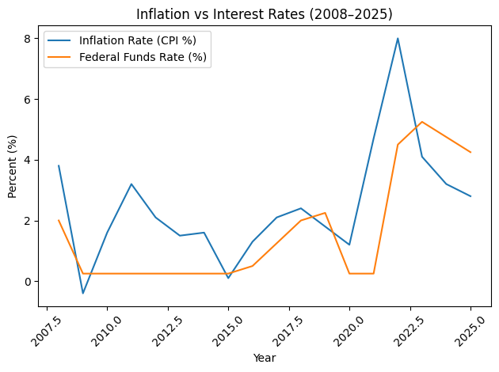

Seeing the Cycle by Turning Data into Cycle Intelligence
Multifamily real estate does not reward opinions; it rewards pattern recognition, and every phase of the multifamily market cycle leaves fingerprints—in employment reports, rent growth trends, construction pipelines, lending spreads, cap rate movements, stock market behavior, and capital flows. Yet most investors consume this information passively. They read headlines that are three to six months behind the signal, listen to commentary, and react emotionally. Very few chart the signals, and that is where the separation occurs.
Charting transforms scattered data into visible structure and allows investors to “see” the economy. It converts noise into narrative. It allows you to see phase transitions forming before they become obvious. For investors committed to mastering the four-phase framework, charting signals is not optional. It is foundational.
This lesson is short by design. It is the hinge between the two halves of Part Two. Lesson 2.2.1 gave you the interpretive distinctions—leading versus trailing, correlation versus causation. This lesson gives you the visual discipline that makes those distinctions usable. Part Three will turn that discipline into the Cignal Dashboard you maintain. Here, the job is simply to learn what a chart can tell you that a number cannot.
Why Charting Matters in a Cycle-Driven Strategy
The multifamily market cycle is not random. It follows historic patterns and moves in sequences driven by capital behavior, supply response, and economic momentum. However, these shifts rarely announce themselves clearly. Instead, transitions appear first as subtle divergences in data trends—and a divergence in a data table is nearly invisible. On a chart, it is the first thing you see.
Charting allows you to:
- Detect inflection points before they show up in headline levels
- Identify acceleration or deceleration in a trend that is still moving the same direction
- Recognize divergences between leading and trailing indicators
- Confirm whether the three layers of the Onion Framework are aligned or disconnected
- Remove emotion from decision-making by anchoring judgment to a plotted line rather than a felt mood
When signals are plotted over time — rather than viewed as isolated data points — patterns emerge that cannot be seen otherwise.
What a Chart Actually Shows You: Level, Direction, Velocity
Every indicator can be read three ways, and a headline gives you only the first.
Level is the number itself: rent growth is 4 percent, the 10-year Treasury is 4.3 percent, absorption was 900 units last quarter. Level is what the report states, what the podcast repeats, and what most investors react to.
Direction is the slope of the line: is the indicator rising or falling? Two submarkets can both post 4 percent rent growth, but one arrived there rising from 1 percent and the other falling from 8 percent. Same level, opposite meaning. This is the “read momentum, not levels” discipline from Part One made visible.
Velocity is the change in the slope: is the trend accelerating, holding, or decelerating? Rent growth that is still positive but decelerating for three consecutive quarters is telling you something the level cannot—that the Expansion phase is maturing. Velocity is where cycle transitions first become visible, and it is almost impossible to see without plotting the data.
The practical tool for all three is the year-over-year slope. Plot the year-over-year change of an indicator, not just its raw value, and you strip out seasonality while making direction and velocity obvious. When the year-over-year line crosses from rising to flat to falling, you are watching a cycle turn.
Charting the Three Layers — Three Clocks, One Cycle
Part One organized your signals into three layers by scope and lead time. Charting respects that structure. You are not building one chart of “the market.” You are building three chart sets that run on three different clocks, and then reading them against each other.
Layer 3 charts move first and move slowly—they set the structural conditions twelve to twenty-four months out. Layer 2 charts translate those conditions into multifamily-specific implications six to twelve months out. Layer 1 charts confirm or contradict what the deeper layers predicted, three to six months out, at the level where your decisions are actually executed. When the three chart sets tell the same story, you have alignment. When they do not, you have either a transition forming or a submarket diverging from the national cycle—and both are worth knowing about early.
LAYER 1 • SUBMARKET
3–6 month lead time
Operational decisions: rent strategy, concessions, renewals, lease-up pacing
Chart weekly to monthly
LAYER 1 SIGNALS TO CHART
Days on Market
Absorption Rates and Absorption Momentum
Multifamily Deliveries (submarket)
Construction Pipeline (late-stage, submarket)
Local Concession Activity
Local Job Growth
Submarket Vacancy Direction
LAYER 2 • INDUSTRY
6–12 month lead time
Tactical decisions: acquisition pacing, capital deployment, disposition timing
Chart monthly to quarterly
LAYER 2 SIGNALS TO CHART
Building Permits (national)
Construction Pipeline (national, early to mid-stage)
Capital Flows (Flow of Funds)
National Multifamily Transaction Volume
Employment Dynamics (multifamily-leading)
Real Consumer Spending (PCE) composition
Consumer Confidence
Population and Migration Trends
LAYER 3 • MACROECONOMIC
12–24+ month lead time
Strategic decisions: market entry and exit, capital structure, hold strategy
Chart monthly; review quarterly
LAYER 3 SIGNALS TO CHART
Interest Rates (Federal Funds Rate, 10-Year Treasury)
Yield Curve (10-year minus 2-year spread)
Inflation (CPI and PPI)
GDP and Economic Growth
Stock Market (S&P 500)
Foreclosures
Long-Term Demographic and Structural Forces
These are the same indicators you met in Lessons 2.1.2 through 2.1.4. Nothing new is being added to your watch list. What is new is the instruction to plot each of them over time, on a consistent scale, with at least two full years of history behind the current reading—because a line with no history has no slope, and a line with no slope tells you nothing.
Overlaying Layers — Where Divergence Becomes Visible
The single most valuable chart you will build is not a chart of one indicator. It is an overlay of two indicators from adjacent layers, placed on the same timeline, so you can watch one lead the other.
Overlay national building permits (Layer 2) against submarket deliveries (Layer 1) and you will see the permit line turn twelve to twenty-four months before the delivery line follows—because a permit today is a delivery later. Overlay the yield curve (Layer 3) against national transaction volume (Layer 2) and you will see capital retreat months after the curve inverts and return months after it re-steepens. These are not coincidences. They are propagation chains, and the overlay makes the chain visible.
When the leading line has turned and the trailing line has not yet followed, you are looking at a divergence. That gap is the transition window—the period when a cycle-aware investor can act before the market confirms. When both lines are moving together, you are looking at alignment, which is confirmation that the phase you believe you are in is the phase you are actually in.
This is also where Lesson 2.2.1 does its work. A divergence you can explain—permits lead deliveries because construction takes time—is causation, and you can act on it. A divergence you cannot explain is either correlation or noise, and you should not. Charting shows you the gap; analytical rigor tells you whether the gap means anything. If you cannot say why one line should lead the other, you should not be trading on the fact that it did.
The Psychological Advantage of Visual Data
Charts remove narrative bias. When markets feel euphoric, charts reveal whether rent growth is decelerating, and when markets feel catastrophic, charts reveal whether stabilization has begun. Visual trend analysis protects investors from emotional overreaction, recency bias, herd mentality, and anchoring to peak values.
There is a second, quieter advantage. A chart you have maintained for two years is a record of your own reading of the cycle. You can look back and see where the lines turned and where you noticed—and where you did not. That record is how interpretive discipline improves. A memory of what you thought the market was doing eighteen months ago is unreliable. A chart is not.
In a cyclical industry, charting strengthens discipline.

The chart above plots two Layer 3 signals—inflation and the federal funds rate—from 2008 through 2025. Read it for direction and velocity rather than level. Notice the 2021 gap, where the inflation line rose sharply while the policy rate held near zero, and the way the rate line then climbed to close the gap through 2022 and 2023. That gap was a divergence between a moving signal and a not-yet-moving response, and every multifamily investor who charted it had roughly a year of warning about the cost of capital before it arrived in their term sheets.
The style of graph used by market analysts varies—bar charts, column charts, area charts, line charts. Although it is ultimately the accuracy of the information that matters most, my personal favorite is the simple line graph, because slope and velocity are easiest to see on it. My recommendation is that you find a chart type that is appealing to you and use it consistently, so that your eye learns what a turn looks like in your own format.
What Phase Transitions Look Like on a Chart
The four phases each leave a visible signature when the layers are plotted together. These are patterns to recognize, not formulas to apply—every cycle draws them differently.
CONTRACTION INTO RECOVERY
Layer 3 turns first: the yield curve re-steepens and the policy rate stops rising or begins to fall. Layer 2 follows: transaction volume stops declining and the permit line, already low, flattens. Layer 1 is still ugly—concessions high, days on market long—but the year-over-year lines have stopped getting worse. Recovery on a chart is not lines going up. It is lines that have stopped going down while sentiment still says they are falling.
RECOVERY INTO EXPANSION
Layer 1 confirms what the deeper layers predicted: absorption momentum turns positive, days on market shortens, concessions burn off. Layer 2 shows capital flows and transaction volume accelerating. The year-over-year rent growth line crosses from flat to rising and its velocity increases. This is the phase where all three layers align and the overlays run parallel.
EXPANSION INTO PEAK (HYPERSUPPLY)
The most important transition to see early, and the hardest, because levels still look excellent. Watch velocity, not direction. Rent growth is still positive but decelerating quarter after quarter. Layer 2 permits and early-stage pipeline are at or past their highs while Layer 1 deliveries are still climbing—the supply that was permitted two years ago is now arriving. Concession activity begins to tick up at the submarket level while national headlines remain strong. On the overlay, the leading line has rolled over and the trailing line has not.
PEAK INTO CONTRACTION
Layer 3 leads again, in the other direction: the curve inverts or the policy rate rises faster than income growth can absorb. Layer 2 transaction volume falls and capital flows retreat. Layer 1 vacancy direction turns up and absorption momentum goes negative. The year-over-year rent line crosses below zero. Contraction on a chart is the only phase where all three layers point down together—and by the time they do, the investor who charted the Peak has already adjusted.
A Charting Discipline That Holds Up
For serious multifamily investors, charting should not be occasional. It should be systematic. A few rules keep it honest:
- Record monthly, analyze quarterly, and always compare year-over-year slopes—direction and velocity, not level
- Keep the scale and the time window consistent so that the same movement looks the same every time you see it
- Plot at least twenty-four months of history behind the current reading; a line with no history has no slope
- Build one chart per indicator and one overlay per adjacent layer pair, and annotate the propagation you expect to see
- Note your reading on the chart itself each quarter, so the chart becomes a record of your judgment as well as the data
With this approach you are identifying both the direction of a trend and the velocity of that direction, which is what allows forecasting with any precision at all. Without charts, acquisition, operation, and disposition decisions become reactive. With charts, they become proactive.
What this lesson deliberately does not do is tell you which of these charts belong on your dashboard, how many signals you need before you act, or how to organize the whole thing into a system you will maintain. That is the work of Part Three. Building Your Cignal Dashboard takes the charts you now know how to read and turns them into the instrument you will actually use, and the Cignal Threshold tells you when what the instrument shows justifies a decision.
FINAL PERSPECTIVE: FROM DATA CONSUMER TO CYCLE ARCHITECT
Most investors read reports, while those with the four-phase framework plot them. The difference is not intelligence. It is structure.
Charting signals transforms information into insight; Insight into timing; Timing into strategy; and strategy into outcome.
The four-phase framework provides the map, the three layers tell you which instruments to watch, and charting the signals tells you where you are on that map right now. Because in multifamily real estate, knowing where you are in the cycle is the foundation for knowing what to do next.